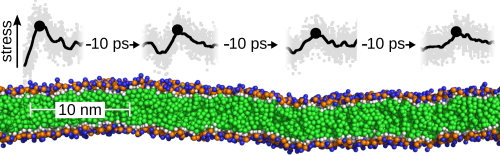

Computational Biophysics
Max Planck Tandem Group
Max Planck Tandem Group
|
Stress propagation through biological lipid bilayers

Membrane tension plays various critical roles in the cell. We here asked how fast and how far localized pulses of mechanical stress dynamically propagate through biological lipid bilayers. By using MD simulations of a DPPC bilayer (green, blue, orange), we observed nanometer-wide stress pulses, propagating very efficiently longitudinally at a velocity of the orders of nm/ps (km/s). Stress propagated for tens of ps before attenuation, implying propagation up to several tens of nanometers before damping. Our data is consistent with proposed continuum visco-elastic models of propagation and experimental estimates of the speed of sound. We speculate this mode of stress propagation to act as a potential ultra-fast mechanism of signaling which may quickly couple mechanosensitive elements in crowded biological membranes.
Read more:
Comment in
spanish
|